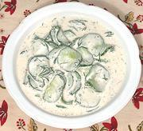

|
Cucumber Salad with MustardGermany - Gurkensalat mit Senfsauce | ||||
| Serves: Effort: Sched: DoAhead: |
4 salad * 5 hrs Best |
Fresh cucumbers in a very light sauce with just a hint of mustard. Good for warm summer days, and as a foil to intensely flavored dishes. | |||
|
1-1/2 2/3 1 1/2 3 1/2 1/4 |
# t c c T t c |
Cucumbers (1) Salt Half & Half Yogurt, plain Mustard, Dijon Pepper, black Dill, fresh |
Make: - (5 hrs - 20 min work)
|